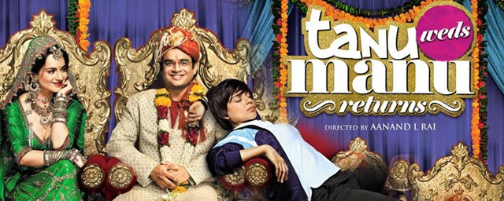
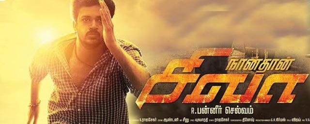
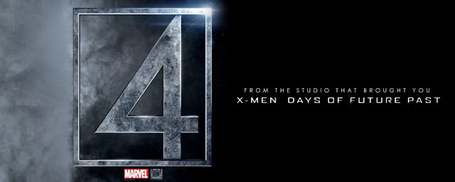
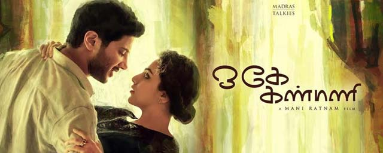
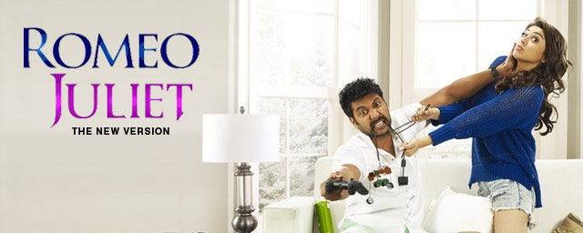
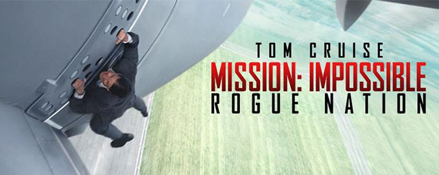
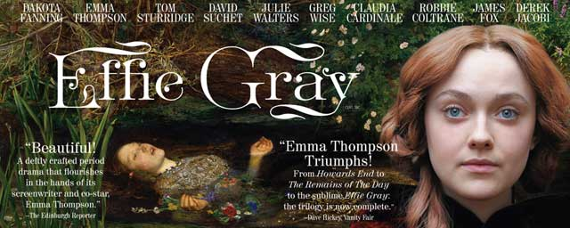
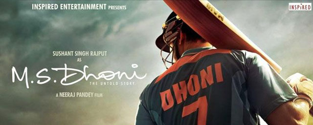

Twenty-two years after the events of Jurassic Park, Isla Nublar, now features a fully functioning dinosaur theme park, Jurassic World, as originally envisioned by John Hammond. This new park is owned by the Masrani Global Corporation. Owen, a member of the on-site staff, conducts behavioral research on the Velociraptors. At the corporation's request, the geneticists create a genetically modified hybrid dinosaur to boost visitor attendance, but it soon runs wild on the island.
Jurassic World34%
Ever wondered what happened to your favourite quirky couple after marriage? 4 years later, take a look into the lives of Tanu & Manu Sharma.

Tanu weds Manu returns82%
A cryptic message from Bond's past sends him on a trail to uncover a sinister organisation. While M battles political forces to keep the secret service alive, Bond peels back the layers of deceit to reveal the terrible truth behind SPECTRE.

Spectre36%
In the 1930s, the Grand Budapest Hotel is a popular European ski resort, presided over by concierge Gustave H. (Ralph Fiennes). Zero, a junior lobby boy, becomes Gustave's friend and protege. Gustave prides himself on providing first-class service to the hotel's guests, including satisfying the sexual needs of the many elderly women who stay there. When one of Gustave's lovers dies mysteriously, Gustave finds himself the recipient of a priceless painting and the chief suspect in her murder
The Grand Budapest Hotel 63%
Set in 1947, Mr. Holmes follows the story of an aged Sherlock Holmes, who has happily retired. But his past comes to haunt him, when a case involving a beautiful woman is revisited. His memory is weak but he is hell-bent on uncovering the mystery.
Mr Holmes60%
The film is an inspirational love story about a Delhi university student and aspiring writer afflicted with cerebral palsy, who leaves India for New York University, where she falls for a fiery young activist.
Margarita with a straw50%
Naan Thaan Siva is an upcoming Tamil thriller film directed by R. Panneerselvam and produced by Thirupathi Brothers. The film features newcomer Vinod and Ashrita Shetty in the leading roles, while Prashant Narayanan portrays the antagonist

Naan Thaan Siva 45%
Uttama Villain, roughly translated to 'a virtuous villain' is about a struggling actor past his prime, getting ready for one last act that will establish him as the biggest performer of all time. The story covers a time span of approximately 1500 years as it keeps moving to and fro in different time zones.

Uttama Villain10%
The Fantastic Four, a contemporary re-imagining of Marvel's original and longest-running superhero team, centers on four young outsiders who teleport to an alternate and dangerous universe, which alters their physical form in shocking ways. Their lives irrevocably upended, the team must learn to harness their daunting new abilities and work together to save Earth from a former friend turned enemy.

The fantastic four 28%
Preview 1
OK Kanmani is a campus love story laced with comedy and marks Mani Ratnam's return to the romance genre after a decade. Nithya plays an architect and renowned Indian architect BV Doshi plays her professor in the film.

O Kadhal Kanmani75%
An ordinary man goes against all odds and forges his destiny to become a 'Big Shot'. It is the story of how one man's Dream becomes every man's Nightmare...

Bombay Velvet80%
Watch the cool, suave and attractive Romeo romancing the cute, adorable and naughty Juliet in his own alluring way. Presenting Romeo Juliet teaser starring Jayam Ravi and Hansika Motwani directed by Lakshman.

Romeo Juliet24%
Ethan and team take on their most impossible mission yet, eradicating the Syndicate - an International rogue organization as highly skilled as they are, committed to destroying the IMF.

Mission Impossible: Rogue Nation 78%
Life of Josutty narrates the story of Josutty (Dileep), a simple farmer living in a village on the high ranges. Josutty has a father, mother and two sisters. It is about Josutty's life from the age 8 to 38.
Life Of Joseutty 50%
Based on the real-life scandal that shocked Victorian-era England, the film tells the story of Euphemia ''Effie'' Gray. At 19, she married the prominent art historian and critic John Ruskin, but Ruskin refused to consummate their marriage. Lonely and frustrated Effie is drawn to pre-Raphaelite painter John Everett Millais, and finds a friend and champion in Lady Elizabeth Eastlake. After five years trapped in a loveless marriage, Effie will defy the rules of Victorian society.

Effie Gray 40%
M.S. Dhoni: The Untold Story is a film based on the life of Indian cricketer Mahendra Singh Dhoni. The film stars Sushant Singh Rajput as M.S. Dhoni and John Abraham playing the role of Yuvraj Singh. This is definitely a must-watch for cricket fanatics!

M S Dhoni 60%
Double Barrel is a light-hearted comedy entertainer that is set in the backdrop of Goa. The story of the film is associated with the culture of Goa.

Double Barrel 70%
Gabbar is Back is the story of Gabbar Singh Rajput (Akshay Kumar), who starts the Anti-Corruption Force (ACF) that seeks to track down and eliminate corrupt people from society. However, he soon finds that the police and the government are out to get the vigilante behind those killings. The film follows Balbir Singh (Sonu Sood) as he heads the task of hunting down the ACF.

Gabbar 30%